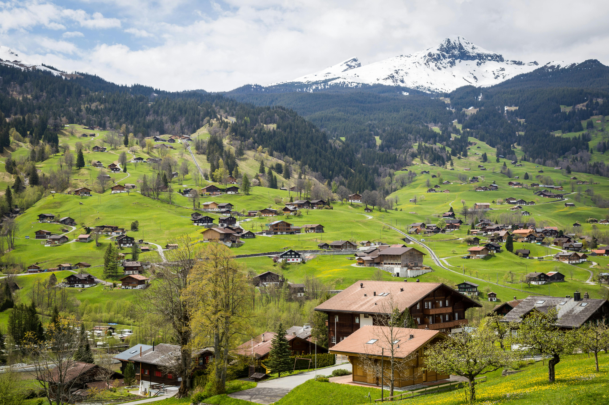

Bern, Switzerland
Bern, the charming capital of Switzerland, is known for its medieval old town and scenic beauty. The Aare River winds around its historic center, filled with arcaded streets and clock towers. Visitors can explore the Bear Park, the Einstein House, and enjoy stunning views from the Rosengarten. With its calm atmosphere, Bern perfectly reflects Swiss quality and elegance.
The charm of Bern lies in its calm rhythm and perfect blend of history and nature. The city’s sandstone buildings glow warmly under the sun, and trams glide quietly through the streets. Locals enjoy swimming in the Aare River during summer or sipping hot chocolate in winter cafés. Surrounded by mountains and meadows, Bern feels both peaceful and alive — a hidden gem at the heart of Switzerland.
Bern charms visitors with its peaceful rhythm and medieval streets. The Aare River, red roofs, and scenic bridges make it a postcard come to life. Whether you’re exploring museums or enjoying Swiss chocolate, Bern’s calm beauty never disappoints.